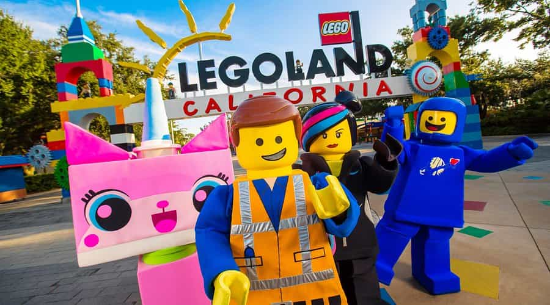
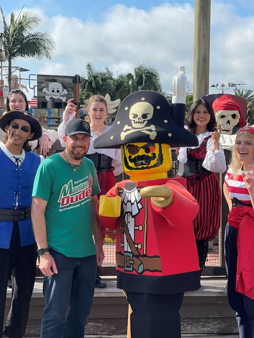
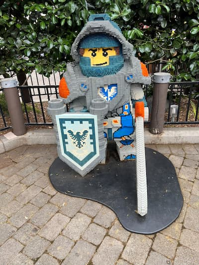
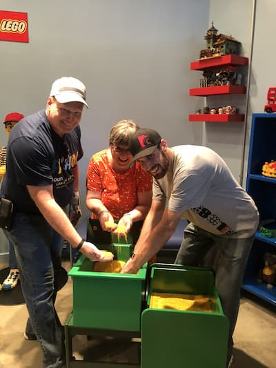

Let's Build Together

My Lego Experience
I Have been building with Lego my whole life. I started at a very young age and haven't stopped. I love how creative it and the fun things I am able ot build. I remember getting Lego sets, opening the box, and dumping out the bags. Back when I started the bags weren't numbered so you had to dump the pieces in their organized piles and search through each piece as you went through the instructions. I have met a lot of Lego fans through the years and its so fun to connect with people with the same interests. I have some friends that are into Lego and while I was dating my wife I got her into Lego. Something about it just relieves so much stress and you are able to just have fun and build your Lego model. I hope this can be a page where every Lego fan from all walks of life can connect and share their Lego memories and creations.

Things Lego Offers
What I love so much about Lego is that they are all about their community and fans. They have the nicest customer service you will ever deal with and they make sure you are taken care of. I have had a few Lego sets that I have bought, started putting together and have found that I am missing some pieces. through the Lego website under the support option you can let them know what pieces you are missing and they will send them for free. How awesome is that!? Lego also has several Legoland locations where you can go and have a great time with family and friends. I love going to the Lego store, I have never met a grumpy employee there. They are some of the kindest people you will meet and they are also HUGE Lego fans! They will greet you as you walk through the door and they will help you find whatever set you are looking for or the they will tell you when they have a shipment coming in so you can put that set on hold or just head to the store that day.
Lego Brings Families Together

Lego brings families together. Wether you all like to build Lego sets together or make a trip to Legoland, you will be able to find something you all enjoy. I remember my first time going to Legoland as a kid. I was in Lego heaven! Of course my favorite part was the gift shop but that's besides the point. It is so cool to see all the Lego displays they have their. All the pieces, time, and effort put into those leaves anyone in awe. My parents and I have been to Legoland a few times together and we always love our time their. One year we were going through the lego factory in the back and one of the employees came out and asked if we wanted to take a behind the scenes tour! I couldn't believe it! That was one of the coolest things I got to do there. I got a little gift bag with lego items you can't get anywhere else. I will always remember those trips with my parents and family. They were some of the funest trips for me. I am looking forward to the day when I can go back with my daughter and my wife to make some more family memories there.